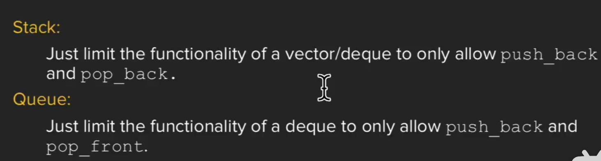

CS106l¶
写在前面的话¶
首先是课程网址，cs106l
其次是cpp.reference网站 记得挂梯子哦
lecture1：beginning¶
for the std¶
std and < bits/stdc++.h > the CSDN web is here,click this
Find the sum of a vector¶
//version 1
vector<int> vec ={1,2,3};
int sum =0;
for(auto val :vec){
sum +=val;
}
//version 2
vector<int> vec={1,2,3};
int sum=0;
for(const auto&val :vec){
sum +=val;
}
//version 3
vector<int> vec={1,2,3};
int sum= std::accummulate(vec.begin(),vec.end(),0);
Hello world!¶
#include<iostream>
int hello_cpp(){
std::cout<<"hello world!"<<std::endl;
}
#include<stdio.h>
#include<stdlib.h>
int hello_c(){
printf("%s","hello world!");
}
//two versions are equal
lecture 2¶
string¶
int main(){
string str="Hello world!";
cout::str::endl;//print the string
cout::str[1]::endl;//print "e"
str[1]='i';//change the char
}
stream¶
输出流
int main(){
ostringstream oss("Ito-En Green Tea");
cout << oss.str()<< endl;//Tto-En Green Tea;
oss << "16,9 Ounces";//16.9 Ouncesn Tea
//这个流是从左开始做buffer进行替换的
ostringstream oss("Ito-En Green Tea",ostringstream::ate);
cout << oss.str()<< endl;//Tto-En Green Tea;
oss << "16,9 Ounces";//
//这个流是从右开始做buffer进行替换的
isstringstream iss("16.9 Ounces");
double amount;
string unit;
iss >> amount;//amount get 16.9 as a double
iss >> unit;
cout << amount/2 << endl; //8.45?
isstringstream iss("16.9 Ounces");
int amount;
string unit;
iss >> amount;
iss >> unit;//this two lines can be combined as iss >> amount >> unit
cout << amount/2 << " " << unit << endl; //8 .9
//一个指针从头开始往右移动，first stop at 6,and amount gets 16, then a bubble, then unit gets .9,so the result outputs 8 .9
}
string to integer
int stringToInteger(const string& s){
istringstream iss(s);
int result;
iss >> result;
return result;
}
we can use manipulators to pad the output.
cout << "[" << setw(10) << "Ito" << "]";
//output:[ Ito]
cout << "[" << left << setw(10) << "Ito" << "]";
//output:[Ito ]
cout << "[" << left << setfill('-') << setw(10) << "Ito" << "]";
//output:[Ito----------]
lecture 3: type and advanced streams¶
cin and cout¶
int getInteger(const string& prompt){
string line;
getline(cin,line);
istringstream iss(line);
int val;
iss >> val;
}
auto¶
automatically help you be lazy
auto prices = make_pair(3.4,5); //pair<double,int>
auto values = make_tuple(3,4,"hi"); //tuple<int,int,char*>
prices.first = prices.second; //prices = {5.0,5};
get<0>(values) = get<1>(values); //values = {4,4,"hi"};
auto [a,b] = prices; //a,b are copies of 5.0 and 5;
const auto& [x,y,z]=values; //x,y,z are const references to the 4,4, and "hi";
lecture 4: sequence container¶
review the structure first
struct PriceRange{
int min;
int max;
}
struct Course{
string code;
Time startTime;
Time endTime;
vector<string>instructors;
}
initialization
caution:Use Thoughtfully When should I use a stringstream? 1. Proccessing strings 1. simplify "/./a/b/.."to"/a" 2. Formatting input/output 1. ippercase,hex,and other stream manipulators 3. Parsing different types 1. stringToLinteger() from previous lectures
STL库¶
example of the bubble sort the usual type is here:
int main(){
vector<int> vec(20);
for(size_t i=0;i< vec.size(); i++){
vec[i]=rand();
}
doBubbleSort(vec);
for(size_t i=0;i<vec.size();i++){
cout << vec[i] << endl;
}
}
void doBubbleSort(vector<int> &v){
for(size_t i=0;i<v.size()-1;i++){
for(size_t j=0;j<size(()-i-1;j++){
if(v[j]>v[j+1]){
int temp =v[j];
v[j]=v[j+1];
v[j+1]=tmp;
}
}
}
}
the STL type is here:
int main(){
vector<int> vec(20);
std::generate(vec.begin(),vec.end(),rand);
std::sort(vec.begin(),vec.end());
std::copy(vec.begin(),vec.end(),std::ostream_iterator<int>(cout,"\n"));
}
sequence container¶
provides access to sequences of elements includes: std::vector < T > std::dequet < T > std::list < T > std::array < T > std::forward_list < T >
std::vector< T >¶
a vector represents a sequence of elements of any type.You specify the type when using the vector:
std::vector< int > vecInt;//vector of ints
std::vector< string > vecStr;//vector of string
std::vector< mystruct > vecStruct;//vector of mystructs
std::vector< std::vector< string > > vecOfVec // vector of vector<string>
summary of Stanford vector< t > vs std::vector< T >

std::deque< T >¶
cpp reference explain deque ,click here
#include <deque>
#include <iostream>
int main()
{
// Create a deque containing integers
std::deque<int> d = {7, 5, 16, 8};
// Add an integer to the beginning and end of the deque
d.push_front(13);
d.push_back(25);
// Iterate and print values of deque
for (int n : d)
std::cout << n << ' ';
std::cout << '\n';
}
vector is the type of sequence that should be used by default...deque is the data structrue of choice when most insertions and deletions take place at the beginning or at the end of sequence.


in general,a graph could tell the difference between the vector and the deque

the stack and the queue¶
 so the stack and the queue are just a special case of the vector and the deque.
lecture5: Associative Container¶
have no idea of a sequence. data is accessed using the key instead of indexes. includes:
map/set:Keys in sorted order,faster to iterate through a range of elements.Unordered map/set:faster to access individual elements by key.
iterator¶
在 C++ 中，迭代器是一种检查容器内元素并遍历容器的对象。迭代器可以被视为指向容器中元素的指针。它们提供了一种方式来访问容器中的数据，而不需要暴露容器的内部结构。C++ 标准库中的所有容器类型（如 vector, list, map, set 等）都提供了迭代器。
以下是关于 C++ 迭代器的一些基本概念：
迭代器的类型¶
输入迭代器: 提供了对数据的只读访问。可以用来读取数据，但不能用来修改数据。例如，流迭代器就是输入迭代器。 输出迭代器: 提供了对数据的只写访问。可以用来修改数据，但不能用来读取数据。 前向迭代器: 提供了读写操作，并且可以向前推进迭代器。但是，它不支持后退操作。 双向迭代器: 除了前向迭代器的功能外，还支持向后移动迭代器。 随机访问迭代器: 提供了完全的读写操作，可以向前向后移动，并且支持跳跃访问（如通过索引访问）。
迭代器的基本操作¶
begin()： 返回指向容器第一个元素的迭代器。 end()： 返回指向容器最后一个元素之后位置的迭代器，通常用于标记迭代器的结束。 ++： 用来推进迭代器到下一个元素。 ：用来解引用迭代器，访问它所指向的元素。 == 和 !=：* 用来比较两个迭代器是否相等或不相等。
示例 以下是一个使用迭代器遍历 vector 的简单示例：
#include <iostream>
#include <vector>
int main() {
std::vector<int> vec = {1, 2, 3, 4, 5};
// 使用迭代器遍历 vector
for (std::vector<int>::iterator it = vec.begin(); it != vec.end(); ++it) {
std::cout << *it << ' ';
}
std::cout << '\n';
return 0;
}
C++11 范围基于的 for 循环 C++11 引入了基于范围的 for 循环，它可以简化迭代器的使用：
这个循环会自动为每个元素创建一个迭代器，并遍历整个容器。迭代器是 C++ 标准库中非常核心的概念，它们使得算法和容器可以独立开来，提供了更高的抽象层次和代码复用性。
lecture 6:advanced iterators and containers¶
review of the iterator¶
four essential iterator operations:
Create iterator:
Dereference iterator to read value currently pointed to:Advance iterator：
Compare against another iterator(especially .end() iterator):
pair class¶
A pair is simply two objects bundled together.
syntax:
quicker ways to make a pair:
map iterators¶
example:
map<int,int> m;
map<int,int>::iterator i = m.begin();
map<int,int>::iterator end = m.end();
while(i != end){
cout << (*i).first << (*i).second << endl;
i++;
}
further iterator usage¶
example:
map<string,int> MyMap;
MyMap = readuserwords();//this function is already got.
for(auto [key,val] : MyMap){
cout << key << "," << val << endl;
}
//the same
for(auto elem : Mymap){
cout << elem.first << "," << elem.second << endl;
}
example:
#include<vector>
using std::vector;
void printVec(const vector<int> &vec){
for (auto elem: vec){
cout<< elem << " ";
}
cout << endl;
}
int main(){
//sorting a vector
vector <int> vec{3,1,4,1,5,9,2,6};
printVec(vec);
std::sort(vec.begin(),vec.end());
//if we want to sort the first 4 ones, we can also use "std::sort(vec.begin(),vec.begin()+4);
printVec(vec);
set<int> elems{3,1,4,1,5,9,2,6};
cout << elems.size() << endl;
//finding an element from a set
auto testit=std::find(elem.begin(),elems.end(),5);
if(testit ==elems.end()){//if not found, the point will continue to move to the last one in elems.
cout << "Not Found" << endl;
}else{
cout << "Found: "<< testit << endl;
}
set<int>::iterator iter = elems.lower_bound(4);
set<int>::iterator end = elems.upper_bound(6);
cout << "start: " << *iter << ", end: " << *end << endl;
for(; iter != end; ++iter){
cout << *iter << " ";
}
cout << endl;
return 0;
}
use the graphs in ppt:


< template T>¶
这段代码是一个C++模板函数，它的作用是返回两个给定参数a和b中的最小值和最大值组成的pair。下面我将详细解释这个函数的各个部分：模板声明:
这行代码声明了一个模板，T是一个占位符类型，它在函数被调用时会被实际传递给函数的参数类型所替换。这意味着my_minmax函数可以接受任何类型的参数，只要这两个参数的类型相同。 pair是C++标准库中的一个模板类，用于将两个值组合成一个单元。这里pair函数体:
if(a < b) return {a, b};
else return {b, a};
函数体包含一个简单的条件判断：
如果a小于b，那么a是最小值，b是最大值，函数返回一个包含a和b的pair。
如果a不小于b（即a大于或等于b），那么b是最小值，a是最大值，函数返回一个包含b和a的pair。
使用示例：
int main() {
auto result = my_minmax(10, 20); // result will be pair(10, 20)
// To access the minimum and maximum values:
int min = result.first; // min will be 10
int max = result.second; // max will be 20
return 0;
}
在这个例子中，my_minmax函数被调用来比较两个整数10和20，并返回一个pair，其中包含最小值10和最大值20。
template function¶
A template function defines an implicit interface that each template parameter must satisfy.
template <typename InputIterator, typename Datatype>
int countOccurences(InputIterator begin,InputIterator end,Datatype val){
int count= 0;
for (auto iter = begin;iter != end;iter++){
if(*iter == yal) ++count;
}
return count;
}
lecture7-8：Function and algorithm¶
lambda¶
int main(){
int limit = getInterger("Minimum for A");
vector<int> grades = readStudentGrades();
auto func =[limit] (auto val) {return val >= limit;};
CountOccurences(grades.begin(),grades.end(),func)
}
Anatomy of a lambda function¶
An example¶
Lambda 表达式（通常简称为 "lambda"）是许多现代编程语言中的一个特性，它允许开发者编写内联的匿名函数，即不需要明确指定函数名的函数。Lambda 表达式在语法上更简洁，并且可以在需要函数对象的任何地方使用。以下是关于 lambda 表达式的原理、作用和一些关键点的解释：
原理
Lambda 表达式的原理基于几个概念：
闭包（Closure）：Lambda 表达式可以捕获其周围作用域中的变量，即使这些变量在 lambda 表达式被定义后已经超出了作用域。这种能力称为闭包。 匿名函数：Lambda 表达式是匿名的，这意味着它们没有名字。它们通常是在需要的地方直接定义和使用的。
表达式：Lambda 表达式通常是一个表达式，它可以被赋值给变量，作为参数传递，或者直接调用。
作用
Lambda 表达式在编程中有多种用途：
简化和内联代码：Lambda 允许你在需要函数的地方直接编写函数逻辑，减少了代码的复杂性。
事件处理：在 GUI 编程中，lambda 表达式常用于为按钮点击等事件指定处理函数。
数据处理：在处理集合（如列表、数组）时，lambda 可以用作过滤、映射或排序的回调函数。
并发编程：在多线程编程中，lambda 可以用作线程执行的函数。
自定义行为：在标准库算法中，lambda 允许你自定义比较或操作行为。
示例 以下是一个 C++ 中的 lambda 表达式示例：
#include <iostream>
#include <vector>
#include <algorithm>
int main() {
std::vector<int> numbers = {1, 2, 3, 4, 5};
// 使用 lambda 表达式来打印所有元素
std::for_each(numbers.begin(), numbers.end(), [](int x) {
std::cout << x << " ";
});
std::cout << std::endl;
// 使用 lambda 表达式来查找第一个偶数
auto it = std::find_if(numbers.begin(), numbers.end(), [](int x) {
return x % 2 == 0;
});
if (it != numbers.end()) {
std::cout << "第一个偶数是: " << *it << std::endl;
}
return 0;
}
[](int x) { std::cout << x << " "; } 是一个 lambda 表达式，它被传递给 std::for_each 算法，用于打印 numbers 向量中的每个元素。另一个 lambda 表达式 [](int x) { return x % 2 == 0; } 被传递给 std::find_if 算法，用于查找第一个偶数。
capture by value(=) or by reference(&)¶
//capture all by value, except teas is by reference
auto func1 = [=,&teas](parameters)-> return-value{
//body
};
//capture all by referene, except banned is by value
auto func2 = [&,banned](parameters)-> return-value{
//body
};
a nice example:further insight of lambda¶
可以缩写成以下形式：（去掉bool）； 如果我们想找一个变量依次递增，传入其地址：int limit = 5;
int num_times_called = 0;
auto isLessThanLimit =[limit,&num_times_called] (auto val){
++num_times_called;
return val < limit;
}
迭代器、一元谓词函数、lambda表达式的一个例子¶
在 C++ 中，template<typename InputIt, typename UnaryPred> 是一个模板声明，它用于定义一个模板函数或模板类，这个模板可以接受两个模板参数：
1. InputIt：这个参数通常用于指定输入迭代器的类型。输入迭代器是一种能够用于读取序列中元素的迭代器类型。它们必须支持至少一次的递增操作（以访问序列中的下一个元素）以及解引用操作（以访问迭代器所指向的元素）。
2. UnaryPred：这个参数用于指定一个一元谓词函数的类型。一元谓词是一个可调用的表达式，它接受一个参数并返回一个可以解释为布尔值的值（通常是 bool 类型）。在算法中，一元谓词通常用于指定一个条件，算法可以根据这个条件来测试序列中的元素。
以下是一个使用这两个模板参数的函数模板示例，该函数用于计算满足给定谓词条件的元素数量：
template<typename InputIt, typename UnaryPred>
typename std::iterator_traits<InputIt>::difference_type
count_if(InputIt first, InputIt last, UnaryPred pred) {
typename std::iterator_traits<InputIt>::difference_type count = 0;
for (; first != last; ++first) {
if (pred(*first)) {
++count;
}
}
return count;
}
InputIt 是输入迭代器的类型，比如 std::vector<int>::iterator。
- UnaryPred 是一元谓词的类型，比如一个 lambda 表达式或者一个函数指针。
- std::iterator_traits<InputIt>::difference_type 是一个类型，它能够表示两个迭代器之间的距离，通常用于计数。
这个 count_if 函数模板接受一个范围 [first, last) 和一个谓词 pred，然后遍历这个范围，对每个元素应用谓词。如果谓词返回 true，则增加计数。
使用这个模板函数的一个例子：
#include <vector>
#include <iostream>
int main() {
std::vector<int> vec = {1, 2, 3, 4, 5, 6, 7, 8, 9};
// 使用 lambda 表达式作为一元谓词，计算偶数的数量
auto even_count = count_if(vec.begin(), vec.end(), [](int x) { return x % 2 == 0; });
std::cout << "Number of even elements: " << even_count << std::endl;
return 0;
}
count_if 函数模板被用来计算 vec 中偶数的数量。Lambda 表达式 [](int x) { return x % 2 == 0; } 作为一元谓词，检查一个整数是否为偶数。
algorithm¶
remove¶
std::remove does not change the size of the container! The algorithm is not a member o std::vector(or any other collection) so it can't change its size member.
erase-remove idiom
这段代码是C++中用于移除容器v中满足特定条件（由函数对象pred指定）的元素的常见模式。这里是分步解释：
1. std::remove_if是一个算法，它接受三个参数：开始迭代器v.begin()，结束迭代器v.end()，和一个谓词函数pred。谓词pred是一个可以调用的对象（比如函数、函数指针或者重载了operator()的类对象），它接受容器的元素作为参数，并返回一个布尔值。
2. std::remove_if算法会遍历指定范围内的元素，并将不满足谓词pred（即pred(element)返回false）的元素移动到序列的前面。算法返回一个迭代器，指向最后一个不被移除元素的下一个位置。
3. v.erase是一个成员函数，它用于从容器中删除元素。这里它接受两个参数：第一个参数是std::remove_if返回的迭代器，它指向第一个应该被移除的元素；第二个参数是容器的结束迭代器v.end()。
所以，整个表达式v.erase(std::remove_if(v.begin(), v.end(), pred), v.end())的工作流程如下：
- 使用std::remove_if找出所有需要移除的元素，并将不需要移除的元素移动到容器的前面。
- 使用v.erase删除那些被移动到容器末尾的元素。
最终的结果是，容器v中所有满足谓词pred的元素都被移除了，容器的大小也相应地减小了。需要注意的是，std::remove_if并不实际删除元素，它只是将不需要删除的元素移动到序列的前面，并返回一个新逻辑末尾的迭代器。实际的删除操作是由erase方法完成的。
lecture9: STL summary¶
文件读取 ifstream¶
ifstream 是 C++ 中用于输入文件流的类，它是从 fstream 类派生而来的，用于从文件读取数据。以下是 ifstream 的基本用法：
- 包含头文件
首先，你需要包含
<fstream>头文件，这是使用ifstream的前提。 -
创建
ifstream对象 你可以创建一个ifstream对象来打开一个文件。 -
检查文件是否成功打开 在使用文件流之前，应当检查文件是否成功打开。
- 读取文件内容 你可以使用多种方法来读取文件内容，以下是一些常用的方法：
使用 >> 运算符
使用 getline() 函数
读取字符
- 关闭文件 当你完成文件操作后，应当关闭文件。
完整示例
以下是一个简单的示例，展示了如何使用 ifstream 读取一个文本文件的内容。
#include <iostream>
#include <fstream>
#include <string>
using namespace std;
int main() {
ifstream inputFile("example.txt");
if (!inputFile.is_open()) {
cerr << "无法打开文件！" << endl;
return -1;
}
string line;
while (getline(inputFile, line)) {
cout << line << endl;
}
inputFile.close();
return 0;
}
在这个示例中，程序尝试打开名为 "example.txt" 的文件，并逐行读取内容，然后输出到标准输出。最后，关闭文件流。
在使用文件流时，应当注意异常处理和资源管理，比如使用 C++ RAII 特性确保文件在退出作用域时能够被正确关闭。在现代 C++ 中，推荐使用 std::ifstream 的 RAII 特性，这样你就不需要显式调用 close() 方法。
lecture 10:Classes and const correctness¶
count a string in another string¶
int countOccurences(const string &word ,const string & text ){
string tofind =" "+word+" ";
//std::search
auto curr = text.begin();
auto end = text.end();
int count = 0;
while( curr!=end){
auto found = std::search(curr,end,word.begin(),word.end());
if(found==end)break;
++count;
curr=find+1;//the correct step may be "curr=find+word.size()";
}
return count;
}
std::search¶
std::search 是 C++ 标准库中的一个算法，用于在给定范围内查找子序列。它定义在 <algorithm> 头文件中。以下是 std::search 的基本用法和它在这段代码中的作用：
基本用法：
template <class ForwardIterator1, class ForwardIterator2>
ForwardIterator1 search(ForwardIterator1 first1, ForwardIterator1 last1,
ForwardIterator2 first2, ForwardIterator2 last2);
std::search 接受四个迭代器参数：
- first1 和 last1 定义了要搜索的范围（即主序列）。
- first2 和 last2 定义了要查找的子序列。
函数返回一个迭代器，指向在主序列中找到子序列的第一个元素，如果没有找到子序列，则返回 last1。
在代码中的作用：
在提供的代码段中，std::search 被用于在文本 text 中查找单词 word：
这里：
- curr 是当前搜索开始的位置，初始时指向 text 的开始。
- end 是 text 的结束迭代器。
- word.begin() 和 word.end() 分别是单词 word 的开始和结束迭代器。
std::search 将从 curr 开始在 text 中查找 word 的序列。如果找到了 word，found 将指向 text 中 word 的开始位置；如果没有找到，found 将等于 end。
在循环中，每次找到 word 后，curr 应该更新为 found 之后的位置，以便继续在剩余的文本中查找 word。但是，如之前提到的，代码中的 curr = found + 1; 是错误的，因为它只前进了一个字符而不是整个单词的长度。正确的更新应该是 curr = found + word.size();。
std::search 使用的是默认的相等比较操作，即 operator==。如果需要不同的比较方式，可以传递一个额外的比较函数或对象给 std::search。
求向量点积¶
int dotProduct(const vector<int>& vec1, const vector<int> & vec2){
return std::inner_product(vec1.begin(),vec1.end(),vec2.begin(),0);
}
const¶
a const pointer¶
using pointers with const is a little tricky
when in doubt,read right to left
//constantcpointer to a non-constant int
int * const p;
//non-constnt pointer to a constant int
const int *p;
int const *p;
//constant pointer to a constant int
const int *const p;
int const * const p;
const iterators¶
const vector<int>::iterator itr = v.begin();
*itr = 5; //ok! changing what itr points to
++itr; //bad! can't modify itr
vector<int>::const_iterator itr = v.begin();
*itr = 5; //bad! can't change value of itr
++itr; //ok! changing v
int value = *itr; //ok! reading from itr
challenge mode¶
这个函数声明包含了多个 const 关键字，每个都扮演着不同的角色。下面是对每个 const 的解释：
-
const int* const： - 第一个const表示返回类型是一个指向常量整数的指针。这意味着通过返回的指针不能修改指向的整数值。 - 第二个const表示返回的指针本身是一个常量指针，这意味着不能更改指针的地址，即返回的指针值不能被赋给其他指针变量。 -
myClassMethod： - 这是函数的名称。 -
(const int * const & param)： - 第一个const表示参数param是一个指向常量整数的指针，意味着在函数内部不能通过param指针修改它所指向的值。 - 第二个const表示param本身是一个常量指针，但在这里与引用结合使用时，它表示引用的是一个常量指针，即不能通过引用改变param的值。 -&表示参数是通过引用传递的，这意味着传递的是参数的别名，而不是参数的副本。虽然引用本身不允许改变，但由于param是一个指向常量的指针的引用，因此你也不能通过引用来改变指针的值。 -
最后一个
const： - 这个const出现在函数声明的末尾，表示这个成员函数是常量成员函数。这意味着在函数体内不能修改类的任何非静态成员变量，并且不能调用类中任何非const成员函数。 综上所述，这个函数声明表明myClassMethod是一个常量成员函数，它接受一个指向常量整数的常量指针的引用作为参数，并返回一个指向常量整数的常量指针。在整个函数调用过程中，通过指针或引用都不能修改传递的整数值，也不能修改指针或引用本身。返回的指针也不能用于修改指向的数据，且返回的指针值本身不能被更改。
lecture11:operator overlap¶
+=¶
vector<string> & vector<string>::operator+=(const int& element){
push_back(element);
return *this;
}
vector<string>& vector<string>::operator+=(const vector<int>& other){
for(int val : other) push_back(val);
return *this;
}
+¶
vector<string> operator+(const vector<string>& vec,const string& element){
vector<string> copy = vec;
copy+= element;
return copy;
}
vector<string> operator+(const vector<string>& lhs,const vector<string>& rhs){
vector<string> copy = lhs;
copy += rhs;
return copy;
}
[]¶
string& vector<string>::operator[](size_t index){
return _elems[index];
}
const string& vector<string>::operator[](size_t index) const{
return _elems[index];
}
const关键字是用来指明该函数不会修改调用它的对象。这个const是函数签名的一部分，称为成员函数的常量性(constness)。以下是关于这个const关键字的详细解释和如果省略它会发生什么：
const关键字的作用
在函数const string& vector<string>::operator[](size_t index) const中，最后的const表明：
- 这个函数承诺不会修改调用它的对象的状态（即，不会修改对象的任何成员变量）。
- 这个函数可以被一个const对象调用。
如果省略const会发生什么
如果省略了最后的const，函数声明将变为：
const后会发生的情况：
1. 不能通过const对象调用：如果一个vector<string>对象被声明为const，你将无法使用这个没有const的operator[]来访问它的元素，因为const对象只能调用const成员函数。
const vector<string> vec = {"apple", "banana", "cherry"};
string fruit = vec[0]; // 错误：不能调用非const operator[]通过const对象
const修饰的成员函数可能会修改对象的成员变量，这违反了const对象的不变性原则。虽然在这个特定的例子中，函数返回的是成员数组的引用，并且函数体本身没有修改任何东西，但是省略const会允许未来对函数的实现进行修改，从而可能会不小心违反const的承诺。
3. 代码意图不明确：省略const可能会让其他开发者误解函数的意图，认为函数可能会修改对象的状态。
总之，省略最后的const会限制函数的使用范围，并可能导致代码的意图不明确。在C++中，正确使用const是编写清晰、安全代码的重要部分。
general rule of thumb:member vs non-member
if binary operator and treats both operands equally(eg.both unchanged) implement as non-member(maybe friend).Examples:+,<.
if binary operator and not both equally(changes lhs),implement as member (allows easy access to lhs private members).Examples:+=.
lecture12:special member function¶
which special member function is called with each line?
StringVector function(StringVector vec0){
StringVector vec1;
StringVector vec2{"Ito","En","Green"};
StringVector vec3();
StringVector vec4(vec2);
StringVector vec5{};
StringVector vec6{vec3+vec4};
StringVector vec7 = vec4;
vec7=vec2;
return vec7;
}
(1) StringVector vec1;
- 默认构造函数：调用了StringVector的默认构造函数来创建一个空的对象。
(2) StringVector vec2{"Ito","En","Green"};
- 列表初始化构造函数：调用了接受初始化列表的构造函数来创建一个包含三个字符串的对象。
(3) StringVector vec3();
- 这一行实际上声明了一个函数vec3，它返回StringVector类型的对象，而不是创建一个StringVector对象。要创建一个空的对象，应该写成StringVector vec3;，这样会调用默认构造函数。
(4) StringVector vec4(vec2);
- 拷贝构造函数：调用了StringVector的拷贝构造函数来创建vec4，它是vec2的一个副本。
(5) StringVector vec5{};
- 默认构造函数：使用了大括号初始化，但因为没有提供初始化列表，所以调用了默认构造函数来创建一个空的对象。
(6) StringVector vec6{vec3+vec4};
- 假设+操作符返回了一个StringVector类型的临时对象，那么这里会调用移动构造函数（如果存在的话），否则会调用拷贝构造函数来从临时对象创建vec6。
(7) StringVector vec7 = vec4;
- 拷贝构造函数：使用了拷贝初始化，调用了拷贝构造函数来创建vec7，它是vec4的一个副本。
(8) vec7=vec2;
- 拷贝赋值运算符：调用了拷贝赋值运算符来将vec2的内容赋值给vec7。
(9) return vec7;
- 如果编译器支持返回值优化（RVO），那么可能不会调用任何特殊成员函数，因为vec0可以直接在调用者那里构造。
- 如果没有RVO，那么会调用拷贝构造函数来创建返回值的副本，或者调用移动构造函数（如果支持的话）。
请注意，如果没有显式定义这些特殊成员函数，编译器会为类生成默认的版本。如果类中包含的资源需要特定的管理（例如动态分配的内存），则通常需要自定义这些特殊成员函数。

lecture13:move semantics¶
StrVector readNames(size_t size);
int main(){
StrVector name1 = readNames(54321234);
StrVector name2;
name2 = readNames(54321234);
}
StrVector readNames(size_t size){
StrVector names(size,"Ito");
return names;
}
//构造函数调用次数：name1 的移动构造 (1 次) + name2 的默认构造 (1 次) + name2 的赋值导致的构造 (4 次，如果赋值运算符是高效实现的，只构造新元素，不复制旧元素）= 6 次。
csdn里面讲的挺好，关于左值、右值、左右值引用的，click here
why r-values are to move semantics.
an object that is an I-value is not disposible, so you can copy from,but definitely can't move them.
an object that is an r-value is dispensible, so you can either copy or move from.

有点没学明白唉~~
lecture14：Inheritance(Screencast)¶
namespace¶
Inheritance¶
some ppts about interface,a,little complex


lecture15:inheritance and template¶
Abstract Classes¶
if a class has at least one pure virtual function, then it is called an abstract class.(Interfaces are a subset of abstract classes.)
Abstract classes can't be instantiated.
class Base{
public:
virtual void foo() = 0;//pure virtual function
virtual void foo2(); //non-pure virtual function
void bar() = { return 42;};//regular function
}

an example:
class Drink{
public:
Drink()= default;
Drink(std::string flavor) : _flavor(flavor) {}
virtual void make() = 0;
virtual ~Drink() = default;
private:
std::string _flavor;
}
class Tea : public Drink{
public:
Tea() = default;
Tea(std::string flavor) : Drink(flavor){}
virtual ~Tea()= default;
void make(){
cout<<"Made tea from the Tea class"<< endl;
}
}
template¶
Templates vs. Derived Classes